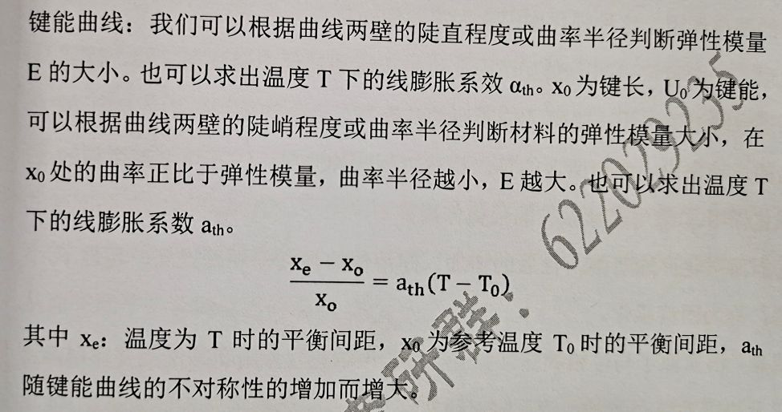

电子浓度=合金的价电子数/原子数
复相合金和单相合金相比，除基体相外，还有第二相的存在。当第二相以细小弥散的微粒均匀分布于基体相中时，将会产生显著的强化作用，这种强化作用称为第二相强化
机理：
对于位错的运动来说，合金所含的第二相分为：
1.弥散强化
2.沉淀强化
理想的完全共格界面，只有在孪晶界，且孪晶界即为孪晶面时才可能存在。
伪共晶区偏向高熔点方向
| 反应类型 | 反应转变式 | 温度 |
|---|---|---|
| 包晶反应 | L+δ⇿γ | 1495℃ |
| 共晶反应 | L⇿γ+Fe3C | 1148℃ |
| 共析反应 | γ⇿α+Fe3C | 727℃ |
| 晶体结构 | 密排面 | 密排面间距 | 密排方向 | 密排方向最小原子间距 |
|---|---|---|---|---|
| FCC | {111} | pass | <110> | pass |
| BCC | {110} | pass | <111> | passs |
| HCP | {00001} | pass | <11-21> | pass |
聚合物大分子之间以物理力聚合而成，加热时可熔化，并能溶于适当的溶剂中。受热时可塑化，冷却时则可以固化成型，并且可以反复进行。
特性：较好的塑性和冲击韧性。

①②③④⑤⑥